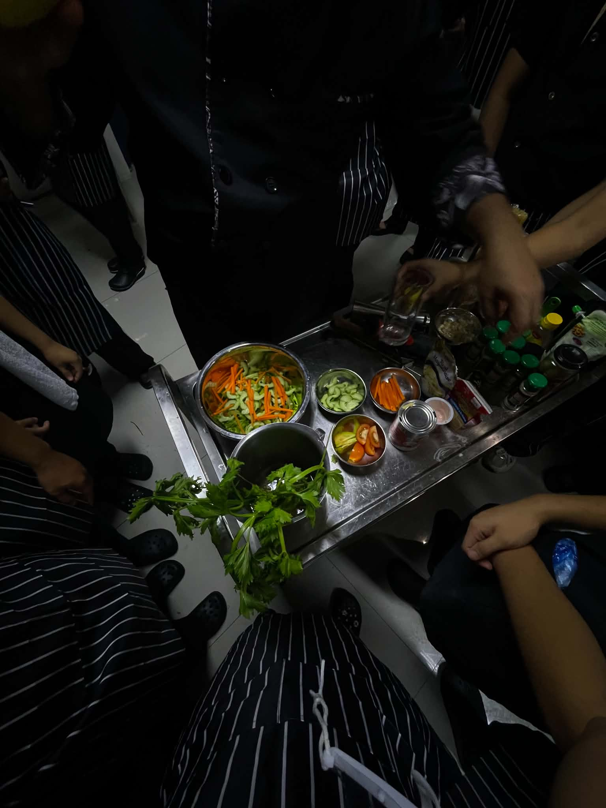
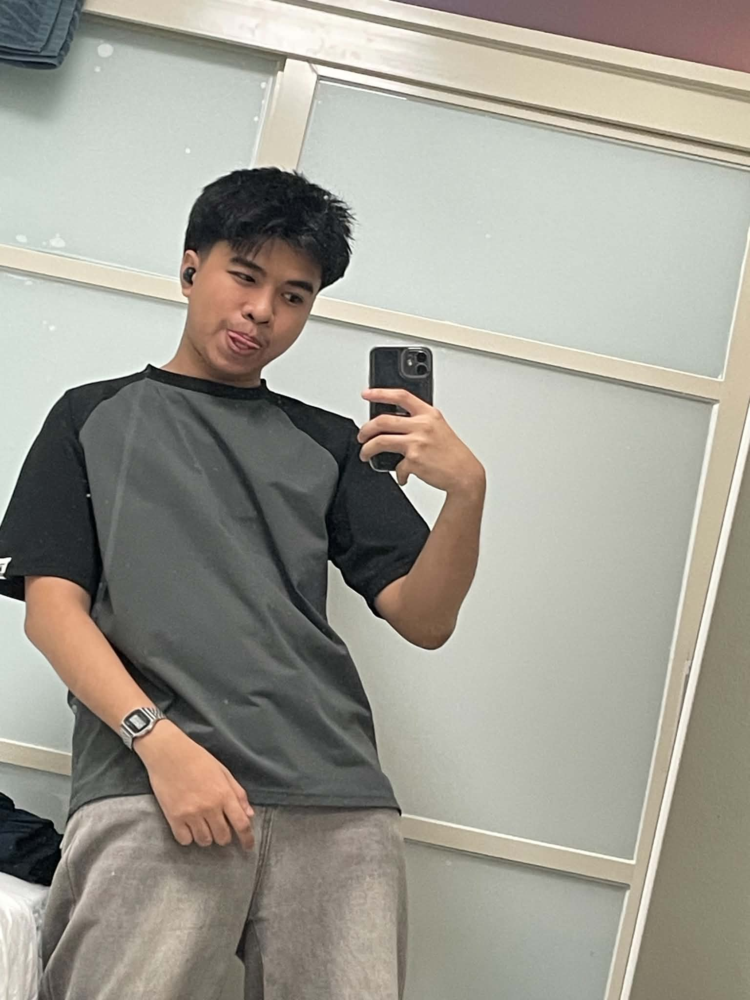

♨
01 / COOKING
Cooking
I enjoy making food and trying things out in the kitchen.
Cooking gives me a fun way to be hands-on and enjoy something I made myself.
WELCOME TO MY WORLD
I'm a college student learning, growing, and discovering new things about myself along the way. This is a little space where I share my story, my hobbies, and the person I'm becoming.

A little about me, in my own words.
01 / ABOUT ME
Just a guy with big dreams, a curious mind, and a passion for discovering what life has to offer. Whether it's exploring new places, trying something new in the kitchen, or enjoying the little moments with the people who matter, I'm always looking for ways to grow and create memories.
I'm still figuring things out, chasing bigger goals, and building the person I want to become. One day, I hope to take my passion for cooking and hospitality beyond borders.
This is me—still growing, still exploring, and just getting started.
02 / MY HOBBIES
Some of the things I enjoy doing in my free time.

01 / COOKING
I enjoy making food and trying things out in the kitchen.
Cooking gives me a fun way to be hands-on and enjoy something I made myself.
02 / MUSIC
Music is one of my favorite ways to relax and enjoy my free time.
Some of my favorite artists are Daniel Caesar, Bruno Mars, and Chris Brown.
03 / ONLINE GAMES
I enjoy playing online games in my free time.
Games are a fun way to relax, think strategically, and enjoy a challenge.
04 / MOVIES
I enjoy watching movies and getting into a good story.
Movies are a great way to unwind and explore different stories and characters.
05 / BILLIARDS
I like the focus and challenge of lining up each shot.
Every turn takes patience, a little planning, and a steady aim.
03 / MY JOURNEY
A few moments and responsibilities that have helped me grow.
LEADERSHIP
Being involved in student and scouting activities helped me practice teamwork, organization, and supporting others.
SERVICE
Assisting during school events and community activities taught me the value of being approachable, attentive, and ready to help.
WORK & LEARNING
Work immersion and helping with a family business gave me a better understanding of communication, teamwork, and serving customers.
Edit these examples to match the experiences you want to share.
04 / LOOKING AHEAD
One of my biggest goals is to work aboard a cruise ship, either as part of the crew or as a chef. I want to explore different places, experience different cultures, and learn from people around the world.
I also want to improve my skills, gain experience, and build a stable future for myself and my family. I know this journey will take hard work and patience, but I am willing to learn, take opportunities, and do my best to achieve this dream.
05 / LET'S CONNECT
This is just one part of my story, and there's still more to come.
Say hello